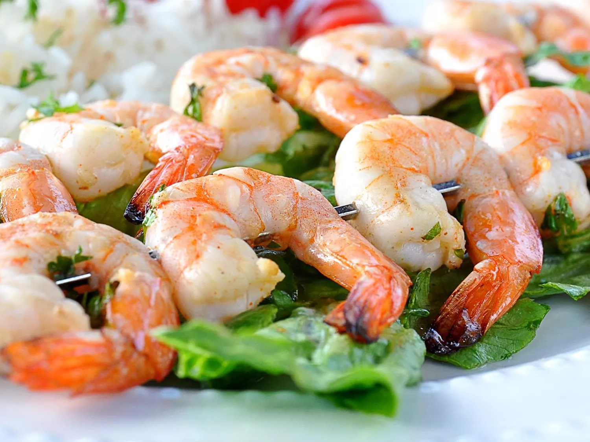

Shrimp Recipe

Description
The shrimp can be marinated up to 3 hours before grilling. The amount of red pepper used can be adjusted according to how hot you like it. The marinade is also great on chicken.
Ingredients
- 1 pound shrimp, peeled and deveined
- 3 tablespoons olive oil
- 3 tablespoons chopped fresh cilantro
- 2 tablespoons fresh lime juice
- 2 cloves garlic, minced
- 2 teaspoons tequila
- ¼ teaspoon cayenne pepper
- ¼ teaspoon salt
- 4 bamboo skewers, soaked in water for 20 minutes
Steps
- Stir shrimp, olive oil, cilantro, lime juice, garlic, tequila, cayenne pepper, and salt together in a bowl. Cover the bowl with plastic wrap and refrigerate shrimp in marinade for 30 minutes.
- Preheat an outdoor grill for high heat and lightly oil grate.
- Remove shrimp from bowl and thread onto skewers; discard marinade.
- Cook on the preheated grill until shrimp turn pink, 2 to 3 minutes per side.